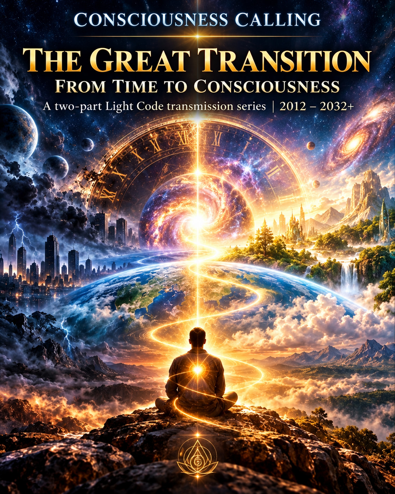

Kali Yuga to Satya Yuga(The Great Transition TIME)
From Time to Consciousness · 2012–2032+

What kind of transformation are we living through—and how can we participate consciously?
The Great Transition explores the relationship between changing times, inner recognition and the choices through which we shape our shared future.
Within the Consciousness Calling vision, this period is contemplated as an invitation to move from unconscious repetition toward remembrance, conscious participation and embodiment.
The years 2012–2032+ provide a reflective framework for this journey. Its movements overlap, and individual lives unfold in different ways. They invite inquiry and participation rather than prescribe a fixed timetable for humanity.
As life feels increasingly fast and demanding, the invitation is to pause, listen within, recognise our patterns and allow Love and discernment to guide our response.
Time measures change. Our participation helps shape what that change becomes.
What If Time Is Not the Real Transition
What if the greatest change is happening within human Consciousness?
Alongside changes in the world, we can examine the awareness through which we experience and respond to them.
2012
The Call
The awakening begins with a question.
Why am I here? Is there something deeper within Life?
QUESTION → SEEK → AWAKEN
2013–2019
The Inner Search
The Mind begins to question its own stories.
Am I only my thoughts, beliefs and identity?
MIND → AWARENESS → INNER SEARCH
2020–2025
The Mirror
Old patterns are revealed to be recognised.
What am I repeating through fear, attachment and unconscious choices?
EXPERIENCE → RECOGNITION → CHOICE
2026–2027
The Remembering
The Heart begins to recognise what the Mind was seeking.
What if Divine Presence was never separate from me?
MIND → HEART → PRESENCE → REMEMBRANCE
2027–2028
The Living Choice
Awakening becomes conscious participation.
Am I waiting for the world to change, or changing how I participate in it?
RECOGNIZE → CHOOSE → ACT → SERVE
2029–2031
The Embodiment
Consciousness is recognised through the way we live.
Can my work, relationships and choices become expressions of Love and Dharma?
PRESENCE → LOVE → ACTION → EMBODIMENT
2032+
The Living Light
The future is shaped by the Consciousness we live today.
What kind of world are we helping to create through our choices?
GRACE → HEART → HUMANITY → LIVING FIELD
Closing Invitation
The future invites our participation now.
We can recognise what is repeating, listen more deeply, and choose how we contribute to Life.
Within Consciousness Calling, trust in Divine guidance accompanies this participation. The Master Light names the Eternal Presence inspiring this journey of remembrance, Love and service.
AWAKEN → REMEMBER → PARTICIPATE → EMBODY